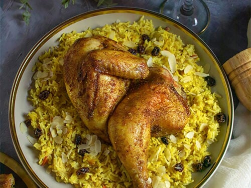

Chicken Mandi Recipe

Description
Chicken Mandi is a popular authentic Yemeni dish that consists of 3 components: chicken (or any other meat), a Yemeni spice mix called "Hawaij", and rice. Sounds like a simple dish, right? Wrong! Because the authenticity is all in the cooking method! Mandi is traditionally slow cooked in an underground "oven", called a Taboon. It's basically like a big hole with lots of coal inside, and the chicken and rice are cooked inside, with the chicken on a rack on top of the rice so all the juices can drip into the pot
Ingredients
- Coriander seeds
- Cumin seeds
- Green Cardamom
- Cinnamon
- Cloves
- Black peppercorns
- Turmeric
________________________________________________________________________________________________________________________________________________
How to make:
- Place the spices in a spice or coffee grinder and grind until a fine powder forms. You're done!
- Now you can remove two teaspoons of the spice mix and set aside for the rice, then use the remaining for the chicken. Mix it with the turmeric and salt
- then add the olive oil to create a paste. Slather it all over the chicken and marinate overnight for maximum flavour. But a few hours is fine too.
- When you are ready to start making the dish, thinly slice the onions ensuring you slice as evenly as possible. You can use a mandolin if you have one. Even sizes help them fry evenly.
- In a pot, add the oil and then drop in the onions while oil is still cold. Fry for 15-20 minutes, stirring them around every few minutes.
- Since we are not deep frying, they won't get extremely crunchy, but that's totally fine. This is the simplest method I found that allows you to use all the onion infused oil in your rice.